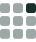

Software
Tools I lead, co-develop or contribute to. Three of them use AI —
and each is built so you can check what the AI claimed.
SQANTI-epi
Lead developer
Transcript structure and chromatin state on one coordinate system, with a machine-learning model scoring accessibility per molecule.
PaintOmics AI
Lead developer
Multi-omics on KEGG, Reactome and MapMan pathways. An agent reads your results and drafts the biology with citations you can open and check.

TELLME
Lead developer
Pathway explanation that earns its claims: keeps only the links your data confirms, and strips everything the evidence does not support.
TUSCO
Lead developer
Single-isoform control genes for human and mouse. Any extra isoform called at one of them is a false discovery by construction.
SQANTI3
Contributor
The standard quality-control tool for long-read transcriptomes: classifies transcript models, flags artefacts, rescues real ones.
MirCure
Co-developer
Curation for microRNA annotations in animals and plants, scored on expression, biogenesis and conservation.